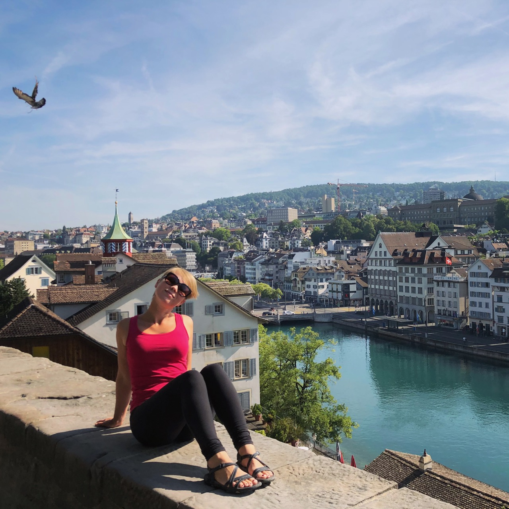
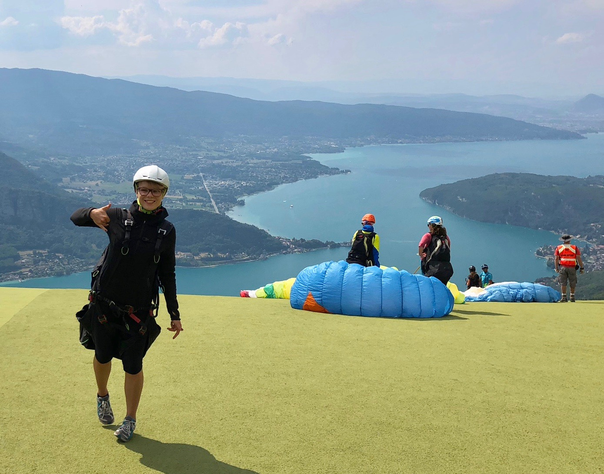

I am based in Germany, born and raised in Russia, educated in France, spent a year surfing self-discovering on Canary Islands, Spain, matured in the Netherlands before settling at the foot of Alps in Bavaria.
Three of my biggest passions that can’t live one without another: exploring, learning and creating.
My design career started deep in my childhood when I was cutting letters out of newspapers and gluing them into collages, long before I could read. I attended an art school from the age of 7 and made good progress in drawing, painting and crafting. Later I have discovered some abilities for maths and programming and interest for computers – unusual hobbies for a girl of that age.. These quite diverse passions did not make the choice of a future career easy, but they certainly helped me along the way.
The biggest advantage early in my career was an ability to code my own designs. But soon it became clear I could not pursue both Frontend and Design Careers and guess what I have chosen! I love guiding the transformation of row ideas into great working products.
Every creative thinker needs to feed her brain with new experiences and emotions to keep it sharp and delivering. The history of my brain diet includes years of nomadic life, hitchhiking, sleeping on beaches, learning all types of surfing and a few languages, cycling on crazy long distances, putting myself in very uncomfortable situations and sometimes.. failing miserably. Now I have more appreciation of having a proper house and ability to pay my food, but I still keep pushing my limits once in while.
Apparently I don't have photos of myself working.. Maybe it's because I am busy then
Probably this one makes the most troubles in my life. I tend to doubt every settled solution and decision made, try to dig as deep into the problem as possible and find the real reasoning behind everything. This makes me sometimes change my mind half way through, which is not always supported by people around. I believe sometimes it is better to stop reading the wrong book. On the other hand, I’m also fast to jump into new opportunities and just try it out.
Structuring and improving the processes can’t be overweighted, innovation is made by lazy people! While might seem that creativity needs chaos and absolute freedom, in reality, it's rather hard to move far without having a clear plan, smooth workflow and good tools. And they also have to be questioned all the time – you don’t want to use an escalator to plans a tree, but probably won’t do much progress building a house with a scoop. I always look for ways do things more efficiently, back in 2010 it was introducing Dropbox for sharing files instead of emailing them after every update, now it might be building a design system, tomorrow training AI.
I call myself a socially-functioning introvert. I absolutely love meeting people and spending time with friends, my travel experience and fantastic house parties are proofs to it. But I absolutely need my focus bubble to be able to produce anything. That’s why you might often see me working in the farthest corner of the office with my AirPods on or escaping to the nearest cafe. In fact, my new home-office routine has solved my find-focus-in-open-office problem, while introducing other challenges along the way. I would not give it up though!
How do you feel about it all? Did I miss something? Let's have a chat!
You can connect with me through Facebook, Linkedin, Instagram, Medium, Behance or Dribbble.